Experience Design @ Van Art Gallery
An AI-art installation made for the 2022 Imitation Game exhibit at the Vancouver Art Gallery, where the visitors became the artwork.

Ask
Vancouver Art Gallery's 2022 exhibit, named Imitation Game, explored the transformative influence of AI on the development and production of visual culture. My team was approached by the gallery's head curators to design, develop, and implement an installation. They wanted:
- A functional art piece that could be implemented in the Imitation Game exhibit
- Non-invasive data gathering method that does not impede visitor's experience
- Attractive and "accurate-ish" visualization output of visitor data
Highlight/s
We worked on my idea, which was to use real-time human-detection software to track each visitor as an anonymized numbered, coloured path, plotting movement and "dwell time" live on a nearby monitor as it happened. Turning visitor behaviour into an immediate, visible pattern let the installation double as both artwork and research tool, fitting naturally into an exhibition about AI itself: the visitors became the artists.
Contribution
- Designed core visual system translating visitor movement into real-time generative output (and named it: 'Creepers')
- Defined the balance between unobtrusive data capture and meaningful visual feedback within an exhibition context
- Developed the visual language and rules governing how movement data was represented in the installation and the customization tool we also supplied
- Worked on the didactic panel content and the visual design system / assets which informed the app for the installation
- Mapped the full visitor journey and exhibition layout for the installation space based on the user personas and journeys
Outcome
The aim of Creepers was to be understood by all gallery visitors in any capacity, regardless of background. We wanted visitor data to be presented in an aesthetically pleasing way, so viewers could appreciate it regardless of the deeper meaning.
Metrics
through the run
Innovation in Digital Media
Exhibited as part of The Imitation Game: Visual Culture in the Age of Artificial Intelligence at the Vancouver Art Gallery in 2022, and awarded at the Centre for Digital Media.
Project media
Here are some key artefacts from the project, with captions explaining each of them.
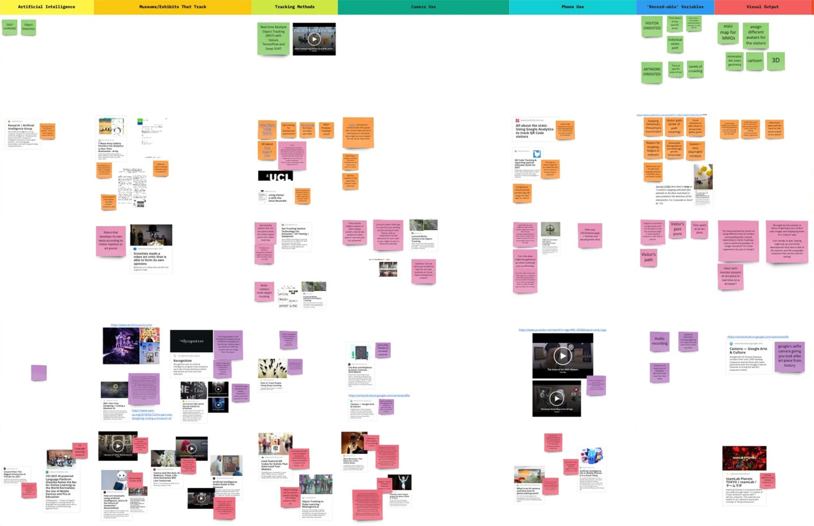
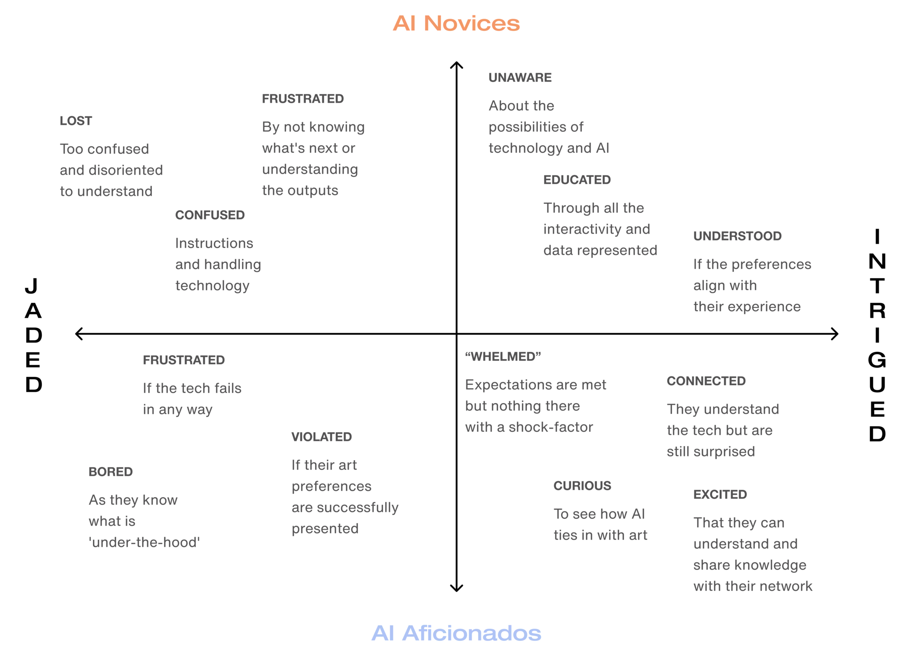
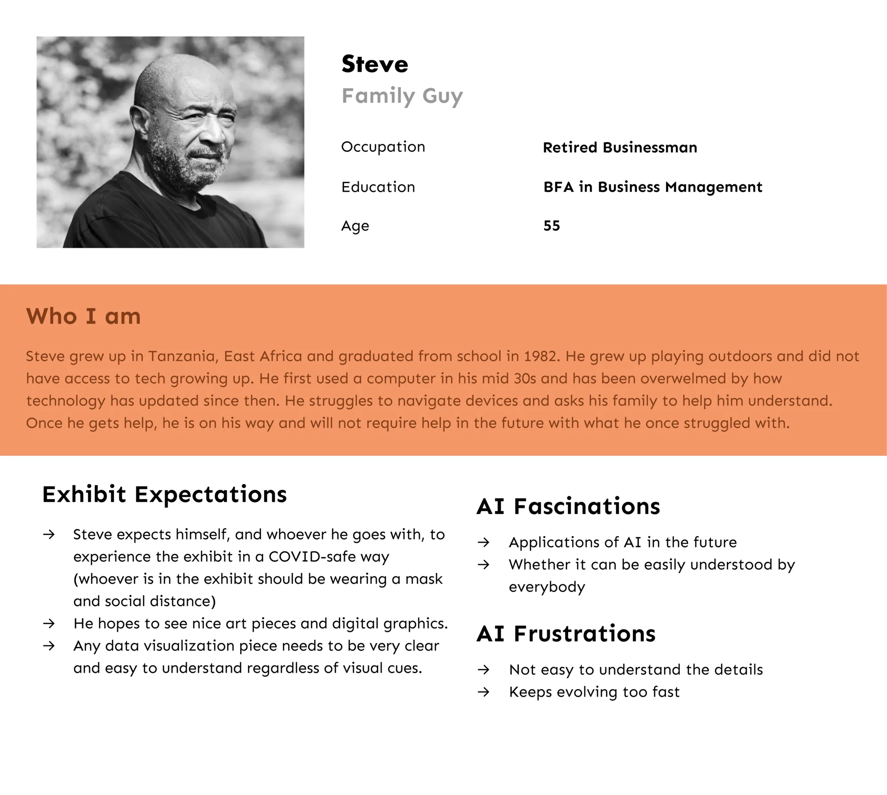
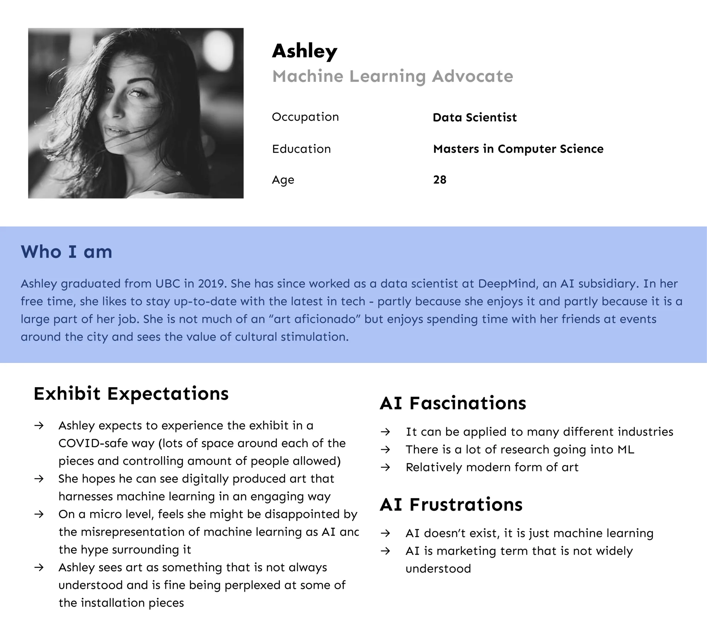
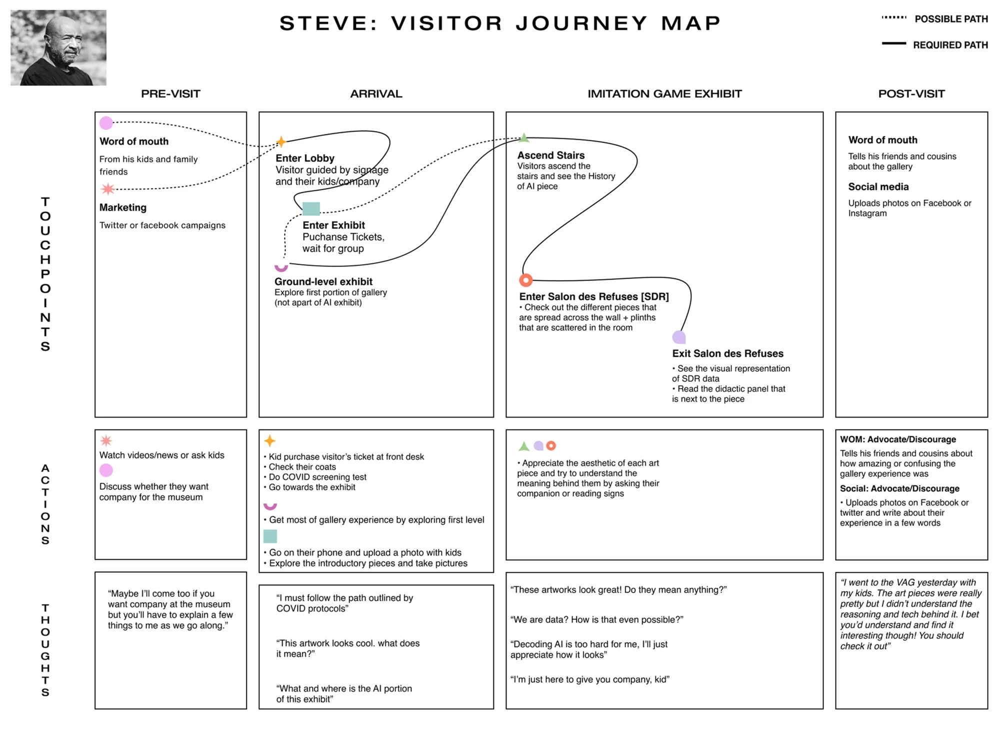
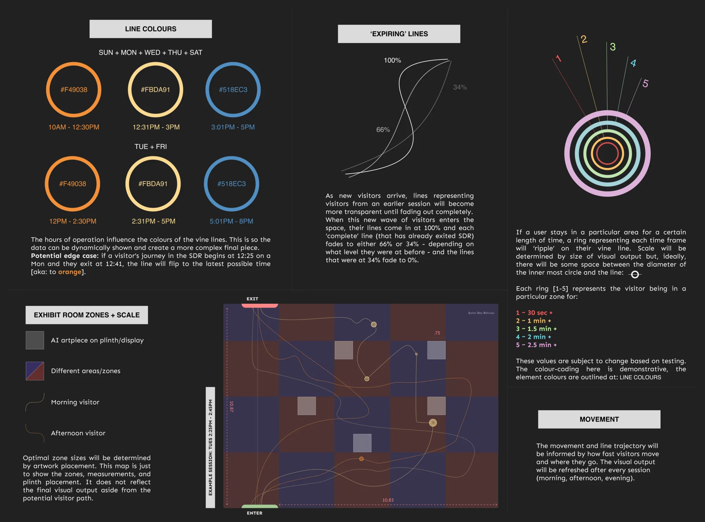
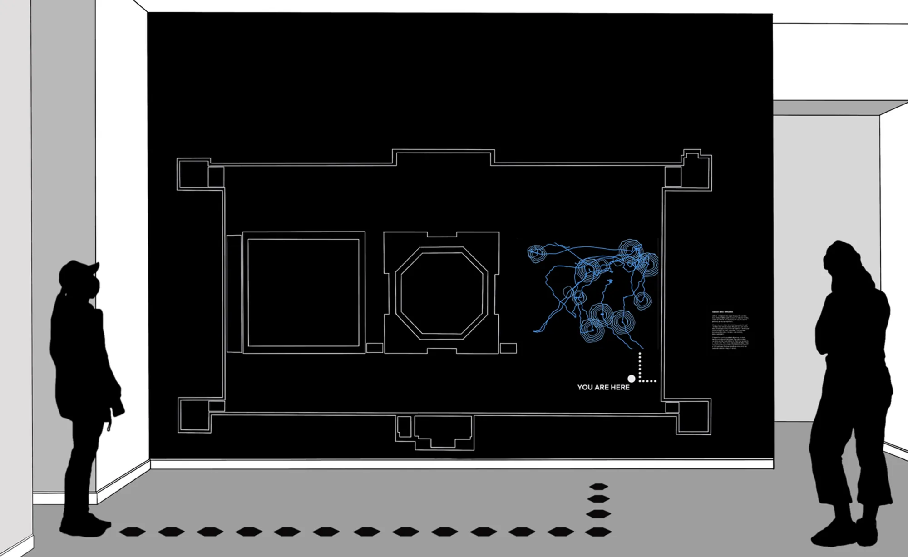
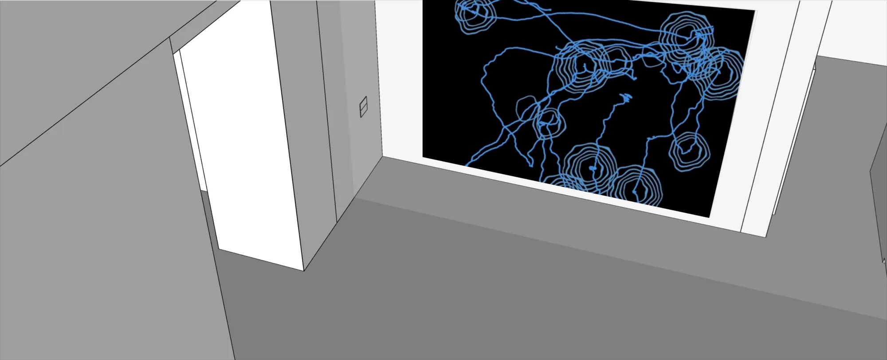
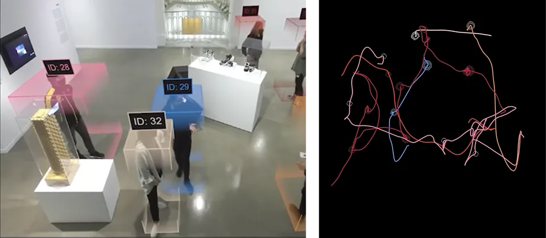
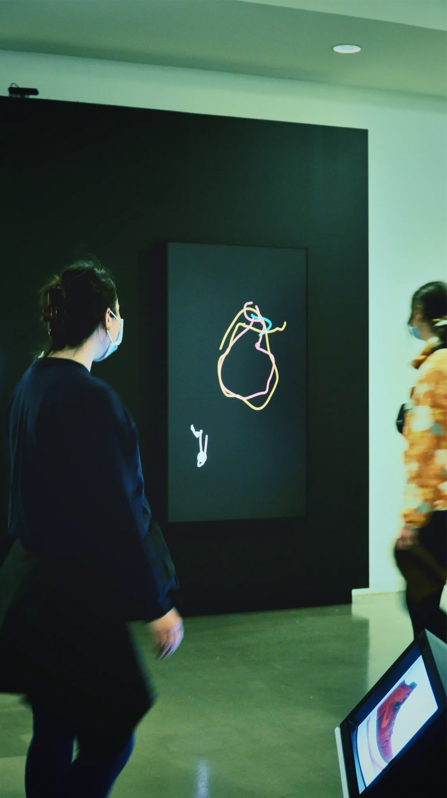
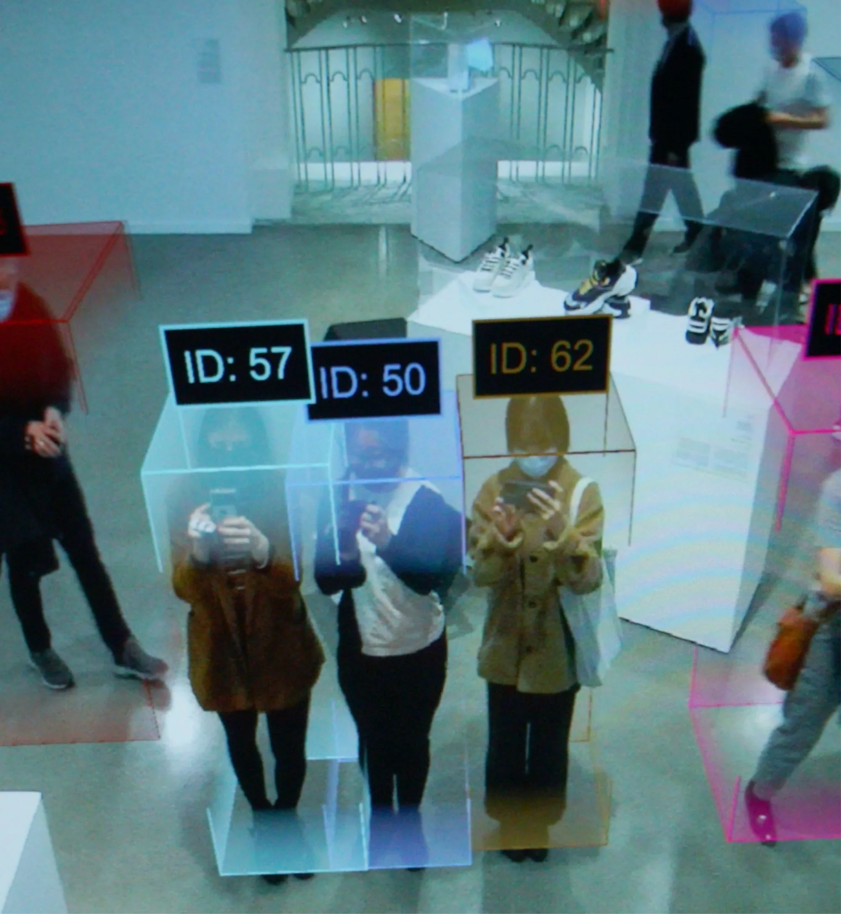